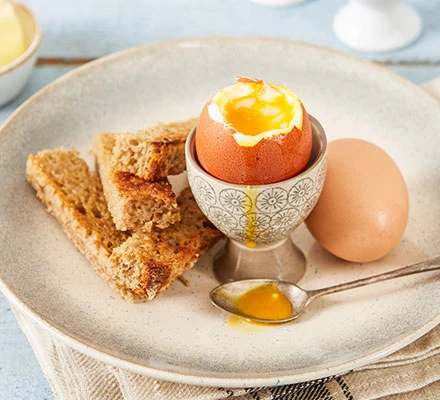

Boiled Egg

A picture of a really nice looking egg
Ingredients
- 2 large free-range eggs, at room temperature
- toast to serve
Steps
- Fill a medium sized saucepan with water and bring to a rolling boil.
- Make sure your eggs aren't fridge cold. By having the eggs at room temperature, it will be less of a shock for the egg reaching the hot water and therefore less likely to crack. You can also use an egg pricker to make a very small hole in each egg before boiling, which will also reduce the chances of it cracking in the heat. Slowly lower the eggs into the water using a spoon.
- Set your timer for 4-5 mins for runny/dippy eggs to serve with soldiers, or 6-7 mins for soft-boiled eggs for a salad. If serving in a salad, plunge the eggs into a bowl of cold water as soon as the timer goes off - this will stop them cooking and cool the shells quickly for peeling.